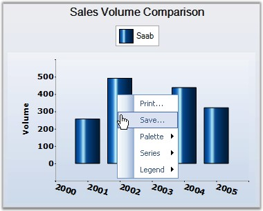
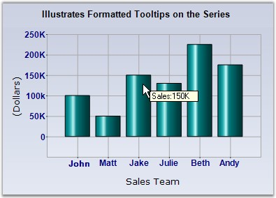
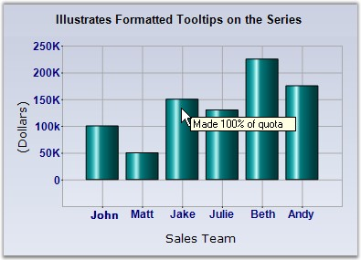

Context Menu
The default context menu in chart web control is controlled by the ShowContextMenu property which looks like the below image.

Context Menu displayed on a Chart Web Control
ToolTips
Essential Chart supports ToolTips in different areas of the chart which comes with multiple customization options.
The different tooltips in the chart can be turned off using the control's ShowToolTips property.
 Note: The ShowToolTips property in the chart is
false by default, so remember to turn this on, before setting tooltips in the
different chart areas.
Note: The ShowToolTips property in the chart is
false by default, so remember to turn this on, before setting tooltips in the
different chart areas.
DataPoint Tooltips
Tooltips can be shown on each data point when the mouse hovers on them. The format of the tooltip is specified by the following property in ChartSeries.
|
ChartSeries Property |
Description |
|
PointsToolTipFormat |
Specifies the format for the datapoint tooltips. The following place-holders can be used in the value.
{0} - Will be replaced by the corresponding ChartSeries.Name. {1} - Will be replaced by the corresponding ChartSeries.Style.ToolTip. {2} - Will be replaced by the corresponding data point's tooltip, for example to set the first point's tooltip, use "series1.Styles[0].ToolTip". {3} - Will be replaced by the corresponding X value of the point. {4} - Will be replaced by the corresponding Y value of the point. Default setting. {5} - Will be replaced by the 2nd Y value, if any. {6} - and so on. |
|
[C#]
series1.PointsToolTipFormat = "Sales:{4}K"; |
|
[VB.NET]
series1.PointsToolTipFormat = "Sales:{4}K" |

Figure 292: ToolTip Format set for Data Points
You can also customize the tooltip for individual data points by setting the ToolTip style for each data point. This is best accomplished by listening to the ChartSeries.PrepareStyle event as shown below.
|
[C#]
//Setting the Tooltip Format series1.PointsToolTipFormat = "{2}";
protected void series1_PrepareStyle(object sender, ChartPrepareStyleInfoEventArgs args) { // Style formatting using a callback. You can apply the same settings directly on the series style on the // point styles. ChartSeries series = sender as ChartSeries; if (series != null) { args.Style.ToolTip = "Made " + ( (series.Points[args.Index].YValues[0] / 150) * 100) + "% of quota"; args.Handled = true; } } |
|
[VB.NET]
'Setting the Tooltip Format series1.PointsToolTipFormat = "{2}"
Protected Sub series1_PrepareStyle(ByVal sender As Object, ByVal args As ChartPrepareStyleInfoEventArgs) ' Style formatting using a callback. You can apply the same settings directly on the series style on the ' point styles. Dim series As ChartSeries = CType(IIf(TypeOf sender Is ChartSeries, sender, Nothing), ChartSeries) If Not series Is Nothing Then args.Style.ToolTip = "Made " + ( (series.Points[args.Index].YValues[0] / 150) * 100) + "% of quota" args.Handled = True End If End Sub |

Figure 293: ToolTip Format set for Individual Data Points
Chart Area Tooltip
Tooltips can also be set for the whole chart area (does not include legends and the space around legends) through the ChartAreaToolTip. The data points tooltips will of course override this setting.
Chart Empty Area Tooltip
The chart also lets you show a tooltip when the mouse hovers over empty areas in the chart (usually around the legend) via the ChartToolTip property.
Toolbar Tooltip
ToolTip for the ChartWeb toolbar is set through ChartWebControl.Toolbar.Tooltip property.